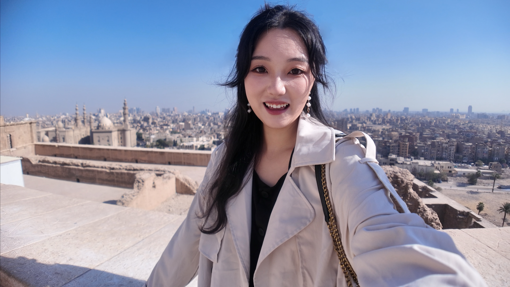
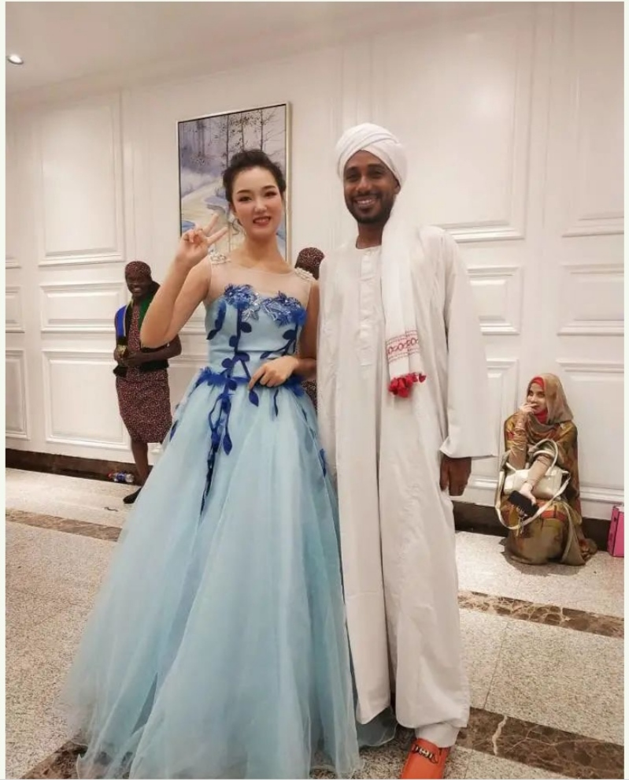
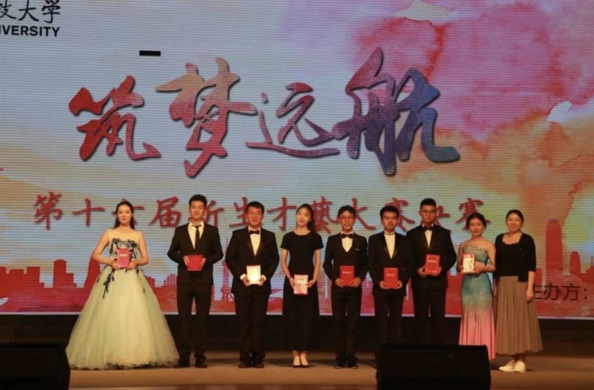
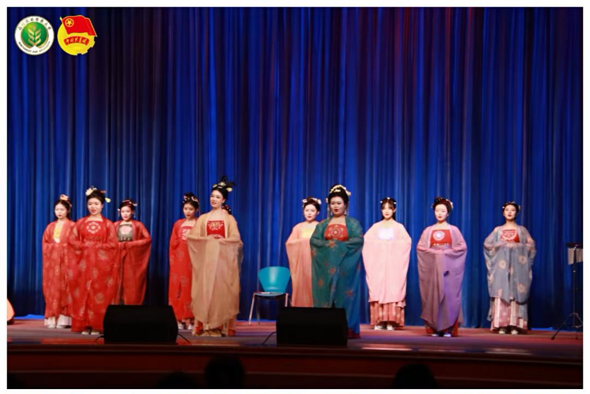
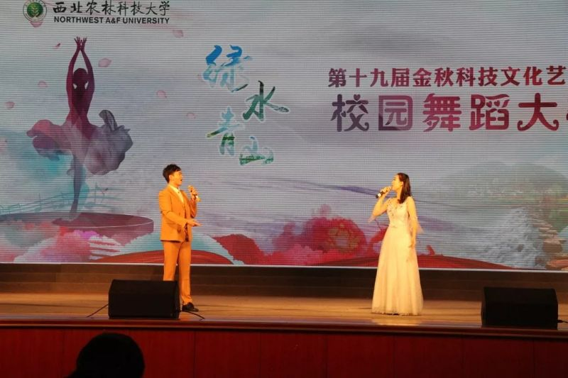
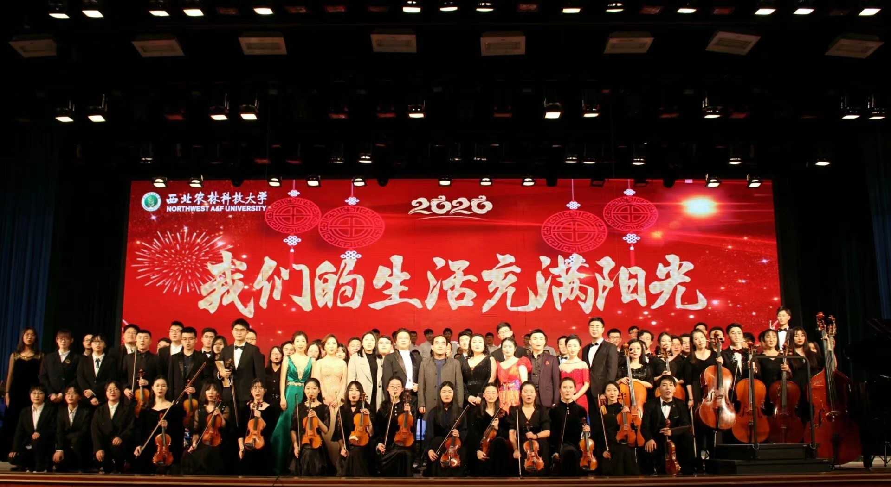
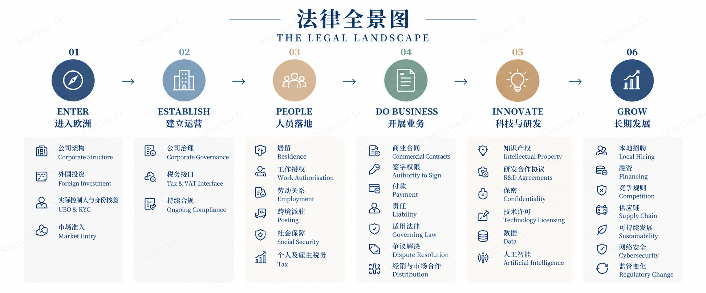

好奇与求知
先理解，再行动。
我习惯先理解一件事情为什么这样运作，再思考自己应该如何参与。＋点击了解更多
法律 · 商业 · 跨境合作
中国法学本科、格拉斯哥大学国际商法硕士，目前生活在比利时。我希望在中国与欧洲之间的真实项目中，将法律、研究与跨文化经验连接起来。
法律塑造了我理解问题的方式，但真正吸引我的，并不是孤立地研究一条规则，而是看见它如何进入真实的商业环境，又如何与企业、人与具体项目发生联系。
我一直很喜欢处在不同领域的交汇处：既需要理解专业信息，也需要听懂不同的人真正关心什么；既可以安静地研究和梳理问题，也会享受沟通、合作，以及一个原本模糊的想法逐渐变得清晰、具体的过程。
从中国到英国，再到现在生活在比利时，不同的学习、工作和生活环境也让我越来越确定，自己希望发展的并不是一条非常单一的职业路径。我更期待以法律作为专业基础，同时保持对商业、人与不同文化的好奇，在跨境企业服务和实际项目中不断学习，也真正参与其中。
先理解，再行动。
我习惯先理解一件事情为什么这样运作，再思考自己应该如何参与。＋点击了解更多让复杂的问题变得清晰。
我喜欢把零散、复杂的信息整理成清晰的结构、问题和下一步行动。＋点击了解更多连接人与不同的视角。
我喜欢听别人怎么想，也享受沟通、协作以及连接不同观点和需求的过程。＋点击了解更多先核实，不想当然。
对需要准确性的事情，我更习惯核实，而不是想当然地下结论。＋点击了解更多理解 · 梳理 · 连接 · 核实
个人背景
国际商法法学硕士（LLM）
法学学士
格拉斯哥大学模拟联合国社团
2022.09—2023.03 · 英国格拉斯哥查看完整经历 ＋西北农林科技大学合唱团
2019.07—2021.09 · 中国咸阳查看完整经历 ＋音乐与文化参与
音乐一直是我生活中很重要的一部分。从小提琴、声乐，到比赛、舞台演出和文化交流活动，我喜欢的不只是表演本身，也喜欢音乐和艺术让不同的人产生连接、共同创造一段体验的过程。
全国社会艺术水平考级证书
全国社会艺术水平考级证书
持续的音乐学习与舞台实践
陕西省第十五届“春芽杯”艺术比赛
西北农林科技大学第16届新生才艺大赛
参与学校音乐会、艺术比赛及大型文艺活动，并参加杨凌示范区庆祝新中国成立70周年文艺晚会等校外演出。
赴北京参加全国大中学生文艺汇演。
获西北农林科技大学2020年“文艺之星”。
参与“海峡两岸暨港澳青年 云上过春秋”节目录制，并参与编排中俄线上交流汇演表演唱节目。





我的价值
我的法律背景让我能够更早识别合同、合规和监管问题，但我希望参与的不只是法律事项本身。对企业服务和跨境项目而言，我更希望把研究、沟通、资源连接和项目跟进结合起来，在需要专业判断时知道应当进一步确认什么，在日常项目中也能够承担具体而实际的工作。
以法律为专业底座，连接不同语境，也保持足够的灵活性，在项目需要的地方发挥作用。
CBTC业务洞察
随着对CBTC了解的深入，我越来越不会简单地用“海外科技园”来概括它。
真正让我感兴趣的，是园区背后的整套业务逻辑：一家企业如何从了解一个陌生市场开始，形成判断、完成落地、连接资源、适应新的规则和商业环境，并最终逐渐进入当地的创新与产业生态。
如果把这些服务放回企业自身的发展过程，我会把它理解成一条不断向前延伸的路径：
案例模拟
一家中国科技企业，从第一次接触 CBTC 到真正开始欧洲业务。
以下企业、人物及项目均为虚构，基于 CBTC 业务模式与典型跨境需求设计。法律知识库

科技 · 绿色转型 · 安全与韧性
从企业场景，到法律分析
将官方法源与项目事实连接起来